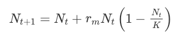

BB512 - Population Biology and Evolution
2023-09-19
1 Welcome to BB512
Welcome to the Population and Evolution course. The course, and this website, is divided into five parts:
- Evolution by Natural Selection
- Population Growth Models
- Population Genetics and Evolution
- Interactions Between Species and Community Structure
- Animal Behaviour, Altruism and Sexual Selection
The recommended textbook is Neal (2018). Other useful textbooks, that are NOT mandatory, but could be useful are Gotelli (2008) and Stearns & Hoekstra (2005).
- Neal, D. (2018). Introduction to Population Biology (2nd ed.). Cambridge: Cambridge University Press. doi:10.1017/9781139107976
- Gotelli, NJ (2008) A Primer of Ecology. Fourth Edition, Sinauer Associates. ISBN: 978-0878933181
- Stearns, SC & Hoekstra, RF (2005) Evolution: An Introduction. 2nd Edition, Oxford University Press. ISBN: 978-0199255634
In addition to this, I will provide a reading list of journal articles that are relevant to the material. These are optional, but highly recommended because they give extra context and background to the course and show you how the theory is used in recent research.
1.1 This website and other course materials
This website holds most of the materials you need for the practical exercises you will do during the course. You will also find the Schedule here.
We may not do ALL of these exercises, but you are welcome to do ones we miss in your own time.
You will find other materials via itsLearning.
For most classes you will need your personal laptops: Please bring them to class (and remember a power supply!).
1.2 Expectations
There are lectures and practical exercise sessions on the course. The practical sessions are designed to help you understand the subject better and I expect students to attend and actively participate in both. There will also be some multiple choice quizzes (e-tests) during the semester. These are intended to help you figure out whether you know the material, and whether there are areas you need to revisit. They do not contribute to your final grade, but I hope you will attempt them. They will definitely increase your understanding of the material. Note that the final assessment will be a similar format!
I expect students to make every effort to keep up with the core reading (mainly the textbook chapters), and to ask questions where they don’t understand.
1.3 Assessment
The assessment for the course will be an electronic exam held in January with multiple choice and short answer questions. It is worth noting that exam format will be similar to the quizzes mentioned above. The date for the exam will be finalised in December.
1.4 Instructors
The instructors of the course are:
- Owen Jones, Associate Professor, jones@biology.sdu.dk
- Thomas Bjørneboe Berg, Associate Prof./Senior Scientist at Naturama, thomas@naturama.dk
If you have any problems accessing materials, or have any questions regarding the course feel free to send me (Owen) an email, or make a comment in the form I mentioned above. You can also make an appointment to see me via Zoom or in my office if necessary*. PLEASE REMEMBER to tell me which course you are referring to if you send an email!
Owen Jones, course coordinator - jones@biology.sdu.dk
Office location: V12-410b-2
1.5 Software
We will use Excel and R/RStudio during this course.
1.5.1 Excel
I expect you will already have Excel installed, so there is not much to say here.
Be aware that Excel differs depending on the language it is localised in. For example, Danish vs. English. This means that some of the commands might differ between version. See here for examples.
1.5.2 R and RStudio
R and RStudio are two separate pieces of software. RStudio is a user-friendly interface to talk to R, it cannot work if you have not got R installed. So, when you install these two programs, install R first, then RStudio.
Already have them installed? I strongly recommend to update to the latest versions of R, which you can download here and RStudio Desktop, which you can find here.
If you are unsure whether you should update your R or RStudio try the following code. If it produces a nice graph, then your R is sufficiently up-to-date. If there are error messages, then you probably need to update R.
install.packages("popdemo")
library(popdemo)
A <- matrix(c(0,1,2,0.5,0.1,0,0,0.6,0.6), byrow=TRUE, ncol=3)
pr <- project(A, vector="n", time=10)
plot(pr)This website includes equations.
Equations sometimes do not render correctly on some web browsers.
From experience, Chrome tends to be the most reliable, Safari (Mac only) also works well.
Can you see the following equation?
\(N_{t+1}=N_{t}+r_{m} N_{t}\left(1-\frac{N_{t}}{K}\right)\)
It should like this:

If it doesn’t look right, then you should try another browser (maybe even your phone browser) or investigate a solution.